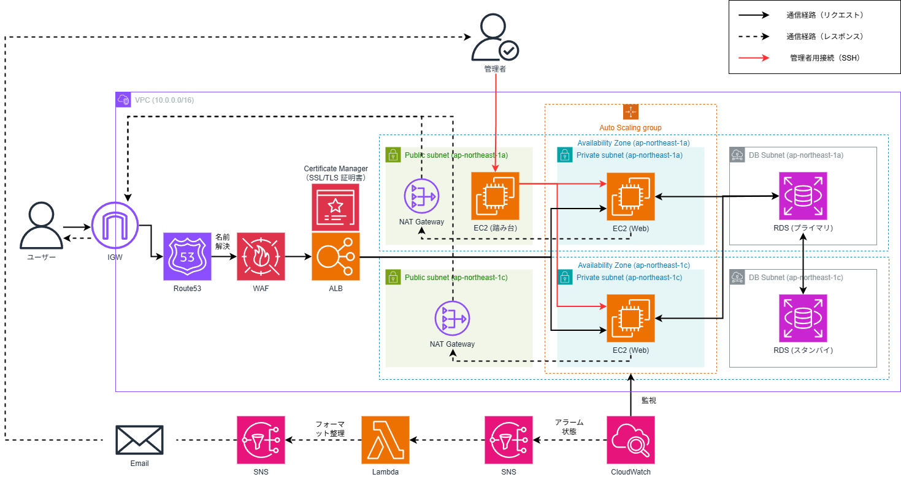

Minecraftサーバー
AWS Spot Instance
このサイトはSAITOのポートフォリオサイトです。
主にAWSで作成した成果物やスキルセットをまとめています。
個人プロジェクトを通じて学んだAWSアーキテクチャの実例です。
AWS Spot Instance

マルチAZ・冗長化アーキテクチャ

ECS Fargate + Rekognition

S3 + CloudFront + CI/CD
AWSクラウドエンジニア志望